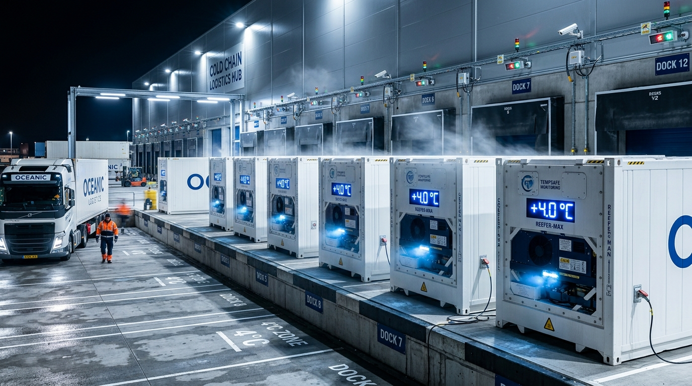
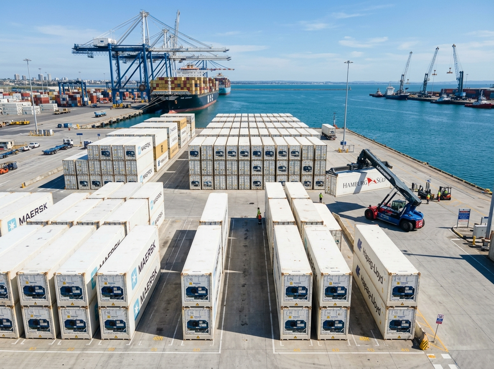

Four Moves.
One 
Seamless Journey.
From sourcing directly at verified origin harvest blocks to delivery across international borders, our logistics pipeline guarantees product viability, phytosanitary compliance, and dedicated maritime berthing.

The 4 Moves of Trade.
Engineered with surgical attention to product viability, phytosanitary standards, and maritime container precision.

Origin Matters.
We identify and ally directly with audited farmer clusters, grower cooperatives, and registered processors across South India's agricultural belts to secure verified provenance.

Quality, Defined.
Every batch passes multi-stage optical Sortex sizing, moisture grading, and accredited laboratory chemical residue screening to ensure zero quarantine friction at destination port.

Ready for the World.
High-burst corrugated cartons, automated pre-cooling, fumigated wooden pallets, and complete phytosanitary documentation prepared for seamless sovereign customs clearance.

Made to Move.
Seamless ocean liner berthing at Chennai (INMAA), Tuticorin (INTUT), and Cochin (INCOK) backed by continuous real-time IoT temperature telemetry inside reefer containers.
From First Conversation to Final Delivery.
A structured 4-phase trade workflow guaranteeing complete commercial predictability from contract to destination port discharge.
We Listen
We analyze your volume schedules, destination port parameters, packaging requirements, and compliance standards.
We Find
We tap into our audited origin harvest blocks and certified manufacturing facilities to lock in confirmed volume and pricing.
We Perfect
Laboratory testing, optical grading, custom export dunnage, and sovereign APEDA clearances synchronized without delay.
We Move
Priority ocean liner dispatch with real-time temperature telemetry and active discharge assistance at destination port.
One Journey. Every Detail. Handled.
Schedule Your Next Trade Consignment.
Speak with our multimodal logistics specialists to coordinate origin farmgate dispatches or ocean carrier container allocations.